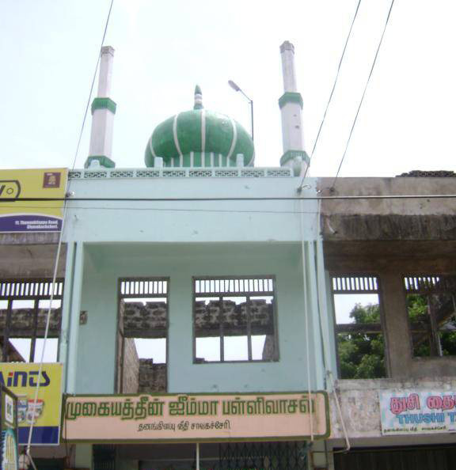
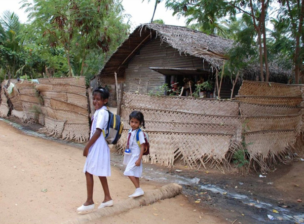

Balasingham's Apology: Individual Remorse Amid LTTE's Silence
Balasingham's Apology: Individual Remorse Amid LTTE's Silence
Jaffna Monitor hellojaffnamonitor@gmail.com 20 Regardless, with this as their rationale, the LTTE labeled the Chavakachcheri Muslims as "traitors" and felt obliged to act. On October 15, 1990, around 1,500 Muslims, mainly from the Dutch road in Chavakachcheri, were expelled under threat of firearms. They were robbed of their belongings and only allowed to take a pair of clothes and a mere 150 rupees. Following the forced expulsion of Muslims from Chavakachcheri, the directive spread to Mannar district, with Marichukkatty residents ordered to leave on October 23 and all Muslims in the Musali AGA division, a region with a sizable Muslim population, told to evacuate the next day. This wave extended to Mannar Island, where Muslims were ordered by the LTTE to evacuate by October 28, leading to their displacement to Kalpitiya via a 60-mile sea journey. Throughout these areas, Muslims were allowed to keep only a pair of clothes and 150 rupees, losing most of their possessions. They underwent rigorous body searches at checkpoints, with some even required to fully undress for inspections. This pattern of forced removals spread to the Northern Wanni mainland. Muslims in Mullaitheevu were instructed to leave within a week on October 22, and those in Kilinochchi were given a five-day eviction notice on October 23. They were permitted only minimal belongings and subjected to strict body checks at checkpoints. Jaffna's Moral Dilemma The LTTE forcefully expelled 72,000 Muslims from the Northern Province of Sri Lanka in 1990, not just uprooting them from their homes but also robbing them of their belongings. This act of mass displacement, coupled with the looting of personal and valuable possessions, marked a profound injustice against a vulnerable minority group. This large-scale expulsion underscores the immense human cost of the conflict, extending far beyond mere displacement to encompass a profound loss of livelihood and heritage. The forced eviction of Muslims reveals a profound irony. The Liberation Tigers of Tamil Eelam (LTTE), which sought to champion the rights of the Tamil minority in Sri Lanka, inflicted egregious harm upon Balasingham's Apology: Individual Remorse Amid LTTE's Silence Anton Balasingham, the chief political strategist and negotiator for the Liberation Tigers of Tamil Eelam (LTTE), did indeed offer an apology for the expulsion of the Muslim community from the Northern Province of Sri Lanka. During the peace talks facilitated by Norway in 2002, Balasingham addressed the issue, describing the expulsion as a "political blunder" and acknowledging the suffering that it caused to the Muslim population. Balasingham’s apology was a notable moment as it was an acknowledgement of wrongdoing by a senior representative of the LTTE. However, it should be noted that this apology, while significant, did not come from the LTTE as an official apology. After its defeat in 2009. various Tamil political parties and leaders, some with former ties to the LTTE, have recognized the injustices faced by the Muslim community and called for reconciliation. Amidst the 2002-2006 ceasefire and dialogue, the LTTE allowed Muslims, previously driven from their homes, to revisit and potentially reclaim their lands. Despite this, a complete resettlement did not unfold during this period of tentative peace. Defending the Indefensible: After the forced removal of Muslims, some ardent LTTE backers rationalized the action, alleging that Muslims had secretly allied with the Sri Lankan government. They accused the community of using mosques to relay strategic information to the military via walkie-talkies, thus posing a security threat. However, when challenged to provide proof, the accusations typically fell back on unsubstantiated rumours and lacked any concrete evidence. Despite the passage of time, certain LTTE adherents still perpetuate these claims, insisting that Muslims served as government informants and used mosques as hubs for intelligence exchange. Such allegations, often repeated without factual backing, remain prevalent in some quarters, perpetuating a story detached from its original context.
Jaffna Monitor hellojaffnamonitor@gmail.com 21 the Muslim community – a group that was itself a smaller minority in the northern regions of the country. This act stands as a haunting reminder of the complexities and moral contradictions in the struggle for minority rights. The role of the Jaffna Tamils during this crisis is also a subject of introspection. Their silence as the events unfolded paints a troubling picture of communal conflicts, where inaction can inadvertently contribute to the oppression of a vulnerable minority. Years after the end of Sri Lanka's civil conflict and the dissolution of the LTTE, the repercussions of this forced displacement continue to affect many. While some Muslims from Jaffna have managed to find new beginnings elsewhere, a considerable number remain in refugee camps, enduring hardships and a lack of basic amenities. This situation highlights the enduring nature of the wounds inflicted during such conflicts. Reflecting on this episode in the history of Northern Sri Lanka, it is evident that the plight of the Jaffna Muslims is more than a historical footnote; it is a stark reminder of the destructive impact of ethnic conflicts and the ongoing struggle for justice and equity. This story, marked by loss and resilience, underscores the need for comprehensive efforts to address the concerns of all minority communities and to foster reconciliation and peace in a nation still healing from its divided past. Silent Spectators, Active Buyers: Jaffna's Duality in the 1990 LTTE Looting The Tamils of Jaffna bore witness, almost unanimously and in silence, to this grave injustice. This pervasive silence, while partly due to fear of the LTTE's wrath, does not entirely absolve the moral complexities involved. Following the expulsion of Muslims from Jaffna, the LTTE's economic division took a significant role in managing the looted belongings of the displaced Muslims. These items, encompassing a wide array of personal and household goods, were made available for purchase by the local Tamil population. The sales were conducted at LTTE-run outlets, widely known as 'Makkal Kadai.' These outlets became focal points for the distribution of the looted goods within the Tamil community. Many Tamils, seizing this opportunity, lined up to buy these items. Offered at relatively affordable prices, the goods were accessible to a more significant segment of the population. The sale featured a variety of personal effects, furniture, and other household items that had been seized from the Muslim community during their forced evacuation. The LTTE's looting was extensive; homes formerly belonging to Muslims were left barren, stripped of tiles, wooden frames, doors, and windows. The plundered furniture and other personal effects eventually made their way into Tamil homes through these LTTE-run outlets. This extensive transfer of property became evident when, after the ceasefire, returning Muslims often recognized their belongings in Tamil households and establishments. Furthermore, the LTTE's actions extended beyond movable property. They also sold properties owned by Muslims, including houses, lands, and vehicles, through illicit transactions. This effectively erased the Muslim community's ownership and presence in these areas. Such actions by the LTTE were part of a deliberate strategy to permanently disrupt the lives of the displaced Muslim community.



Jaffna Monitor hellojaffnamonitor@gmail.com 22 In our Jaffna neighborhood, Kanthasamy Iya, renowned for his piety and modesty, often mused about the enigmatic nature of karma. Reflecting on the LTTE's expulsion of Muslims from Jaffna on October 30, 1990, Iya observed a somber pattern of cosmic justice. For five years, silence prevailed among the Jaffna Tamils, many of whom were mute spectators or even supporters of the expulsion, while a section profited from the Muslims' misfortune. However, on the same date in 1995, a twist of fate saw these Jaffna Tamils, including those who had remained passive or benefited from the situation, being forced into a similar plight of displacement under the same night sky. This turn of events, as if dictated by an unseen force, seemed to balance the scales of karma. Iya concluded, "Indeed, karma is a relentless mistress, Thampi." Acknowledgments This article has been shaped and informed by the extensive work of numerous journalists and writers whose articles are available in the public domain. While no direct collaboration took place, the insights and narratives provided by these professionals have been invaluable. In particular, the contributions of D.B.S. Jeyaraj, a veteran Tamil journalist, deserves special recognition. His detailed reports and thorough chronicles of events, accessible in the public forum, have been instrumental in providing a comprehensive and nuanced understanding of the subject matter. The depth and clarity of his work, along with that of other dedicated journalists, have greatly aided in piecing together this complex narrative, ensuring a well- rounded and informed perspective. I am deeply appreciative of the efforts of these individuals, whose rigorous journalism continues to illuminate and educate on important historical events. References Jeyaraj, D.B.S. (2020, October 21). LTTE’s mass expulsion of Muslims from the north 30 years ago. Daily F.T. The New Humanitarian. (2013, January 21). Sri Lanka’s Muslim IDPs 25 years on. Muslim Mirror. Who will listen to the plight of Sri Lankan Muslims? Mujtaba, Syed Ali. (2022, December 25). No one listens to the plight of Lankan Muslims. The Island. Mubashir VP. (2020, November 1). Muslims in Jaffna mark 30 years since the expulsion. The Scribe. Balachandran, P.K. (2017, February 6). Wigneswaran skirts the issue of LTTE atrocities against Muslims in a call to join the Eluga Tamil rally. The New Indian Express. Returning Home: The Crucial Reintegration of Muslims in the Northern Landscape For centuries, Muslims have been an integral part of the northern region's community, living in harmony with Tamil neighbours. Their distinct architectural landmarks remain prominent in urban Jaffna, while their contributions to tailoring, commerce, and various other industries have significantly shaped the culture of northern cities. In the rural and village landscapes, both Muslim and Tamil families were essential to the agriculture and fishing sectors. It is against this backdrop that the return of Muslims to the North emerges as a crucial element for fostering a pluralistic and resilient future in the region. Staggered Return: Jaffna's Displaced Muslims and the Struggle for Resettlement In the aftermath of the 2009 conflict's end, the Muslim community has slowly started to make its way back to the northern regions, albeit with no definitive resettlement plan from the government. Out of the 8,000 displaced Muslim families from Jaffna, only 2,000 have registered to return, and of these, just 700 have succeeded in returning to their original homes. These uprooted families face a barrage of social and economic obstacles, including bureaucratic hurdles in accessing war victim housing grants, contested claims over their properties, and scant support for rebuilding their livelihoods. Amidst these challenges, progress on the housing front has been limited.